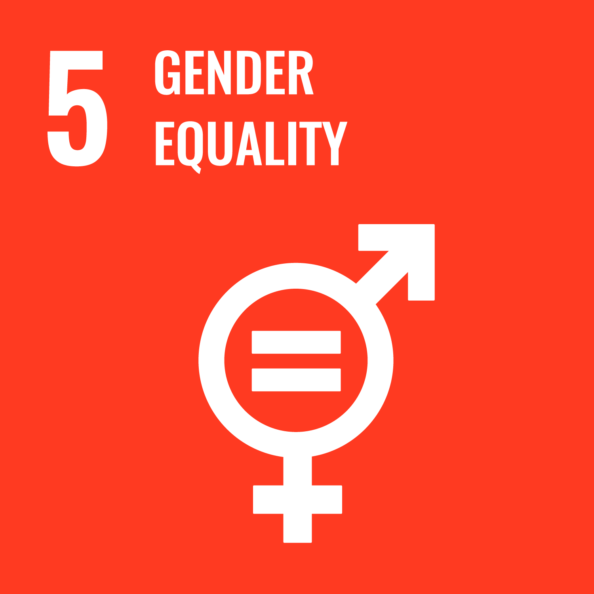
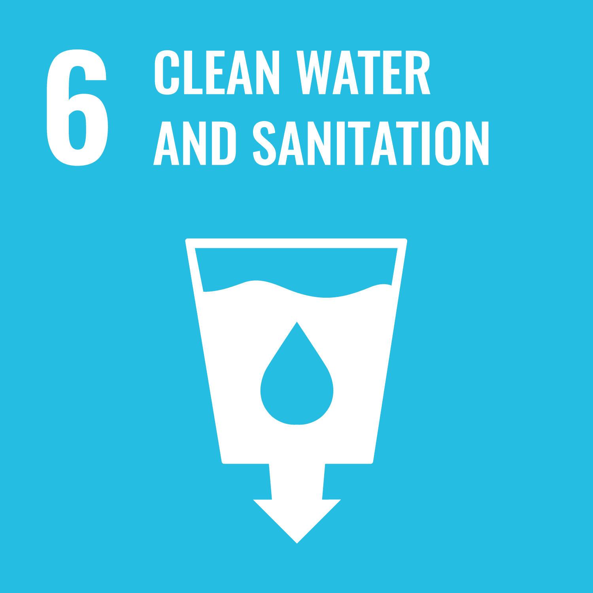
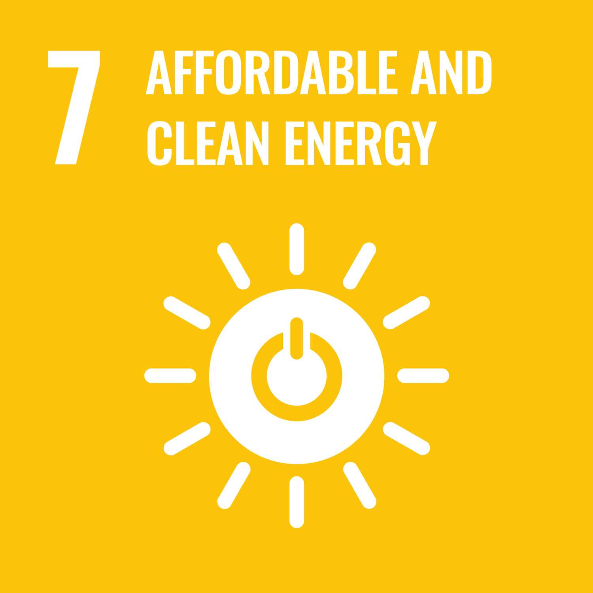
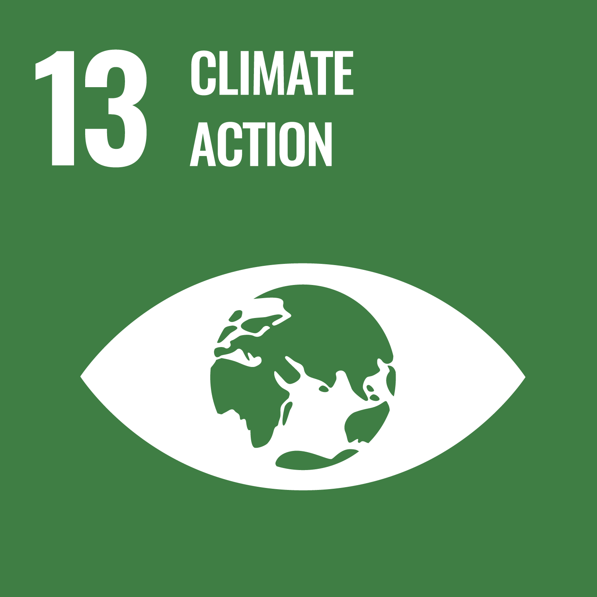
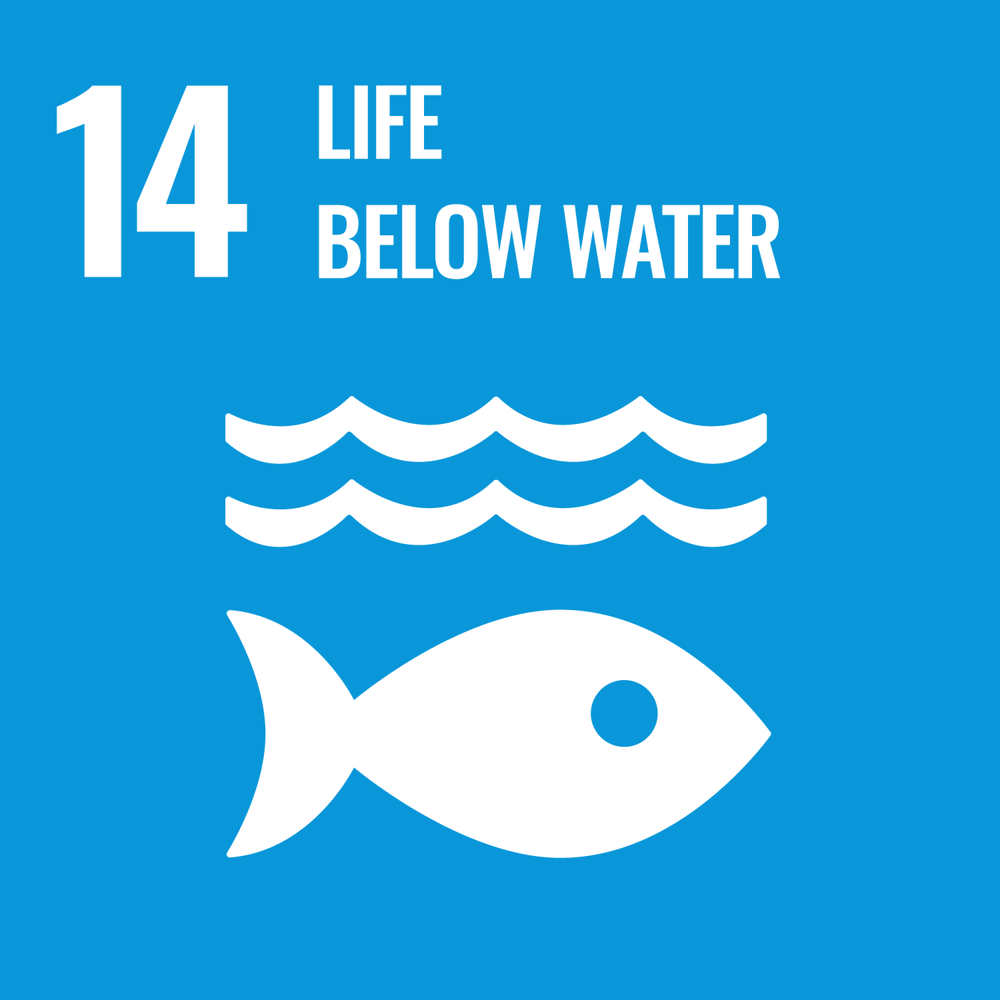
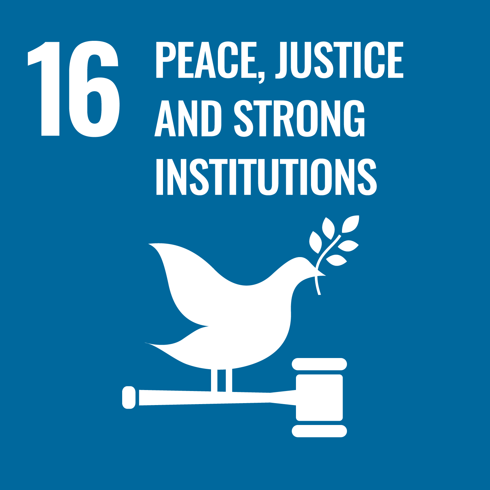

Mengakhiri kemiskinan dalam segala bentuk di mana pun.

Mengakhiri kelaparan dan mendorong pertanian berkelanjutan.

Menjamin kehidupan sehat dan kesejahteraan untuk semua.

Menjamin pendidikan yang inklusif, merata, dan bermutu.

Mencapai kesetaraan gender dan memberdayakan perempuan.

Menjamin akses air bersih dan sanitasi yang berkelanjutan.

Menjamin akses energi modern, andal, dan berkelanjutan.

Mendorong pertumbuhan inklusif dan pekerjaan layak.

Membangun infrastruktur tangguh dan inovasi berkelanjutan.

Mengurangi kesenjangan di dalam dan antarnegara.

Mewujudkan kota yang inklusif, aman, dan tangguh.

Menjamin pola konsumsi dan produksi berkelanjutan.

Mengambil aksi cepat untuk menangani perubahan iklim dan dampaknya.

Melestarikan dan memanfaatkan sumber daya laut secara berkelanjutan.

Melindungi dan memulihkan ekosistem daratan.

Mendorong masyarakat damai dan lembaga yang akuntabel.

Menguatkan kemitraan untuk pembangunan berkelanjutan.